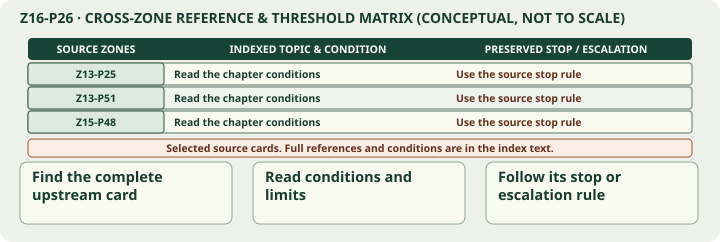

Z16-P26 · Field reference atlas · New manuscript
Chemical Spill, Hazmat Shelter-in-Place and Gas-Leak Index
Locate the original encyclopedia cards for chemical Spill, Hazmat Shelter-in-Place and Gas-Leak Index.
When it applies · Offline reference lookup. The linked chapter defines the situation, audience and limits.
Equipment · Offline reader or the complete linked source cards in print.

Actions
- Open Z13-P25 for evacuate immediately on suspected natural gas or propane leaks; Z13-P51 for prevent deadly toxic gases by never mixing household cleaning chemicals.[A10, U11, U19]
- Open Z15-P48 for shelter-in-place properly for chemical or hazardous-materials airborne plumes; Z15-P49 for separate wildfire HEPA clean rooms, hazmat room sealing, and evacuation orders.[A10, D15, D07]
- Read the linked card’s applicability, equipment and stop conditions together. Keep review and source limitations attached to any excerpt.[A10, ED]
Failure recognition · Acting on a keyword or title while overlooking an upstream exception or stop condition.[A10, ED]
Verify · Confirm the exact page ID and read the full conditions before using the reference.[A10, ED]
Stop or change course · Internal suspected gas leak or CO alarm requires immediate exit and a call from safety. An external chemical plume has a separate official sheltering decision.[A10, U11, C07]
Evidence and editorial notes
- A10 · FEMA / Ready.gov · Make a Plan (current web edition)
- Section: Offline reader navigation, historical lineage, and HOLD transparency · Conditions: Using the complete 16-zone offline archive, zone readers, and print proofs
Support: Navigation aids expose draft status, reconstruction lineage, open diagnostic photo needs, and pending specialist holds on every lookup path.
Limitations: This index entry does not independently establish any safety, regulatory or diagnostic instruction. · Conflicting evidence: None noted.
Editorial note: Index design and cross-reference policy. Substantive directions come from linked upstream chapter claims. · Specialist reviewer: Accessibility, print QA, and editorial reviewer
Primary source · checked 2026-11-24 - C07 · CPSC · Carbon Monoxide Fact Sheet (current web edition)
- Section: CO poisoning symptoms; what to do if suspected · Conditions: Suspected carbon monoxide exposure
Support: Escape to fresh air immediately and contact emergency services. Symptoms can include headache, dizziness, nausea and confusion.
Limitations: CO is colorless and odorless; symptoms mimic viral illness or altitude fatigue and can incapacitate sleepers without waking. · Conflicting evidence: None; aligns with CDC-CO.
Editorial note: Standard CO emergency stop condition across Z02 and Z03. · Specialist reviewer: Carbon monoxide safety and emergency medicine
Primary source · checked 2026-11-24 - D07 · US EPA · Create a Clean Room to Protect Indoor Air Quality During a Wildfire (current web edition)
- Section: Create a Clean Room > Indoor Filtration and Recirculation Setup · Conditions: Households sheltering indoors during multi-day wildfire smoke events
Support: Designate an interior room with few doors/windows, run a properly sized portable HEPA air cleaner (avoiding ozone generators) or set HVAC to recirculate with a MERV-13 filter if system-compatible, and avoid indoor combustion (candles, gas stoves, vacuuming without HEPA) that adds particulates.
Limitations: During simultaneous extreme heat and smoke, cooling takes priority if indoor temperatures become dangerous—relocate to a public clean-air cooling center. · Conflicting evidence: None; addresses compound smoke-plus-heat emergencies.
Editorial note: Core indoor clean-room assembly and compound-hazard card evidence. · Specialist reviewer: Indoor air quality and public health
Primary source · checked 2026-11-24 - D15 · CDC · What to Do to Shelter in Place for a Chemical Emergency (2026-06-17)
- Section: Shelter in place; Stay informed; Next steps · Conditions: External airborne chemical release with local shelter-in-place instruction
Support: Follow authorities on leaving or sheltering, shutting off outside-air systems, temporary sealing and the all-clear.
Limitations: No universal floor, gas behavior, shelter duration or permission to ignore an internal gas leak, CO alarm, fire or evacuation order. · Conflicting evidence: See A02 claim audit for boundaries.
Editorial note: Core hazmat shelter-in-place and ventilation-shutoff boundary. · Specialist reviewer: Hazmat response and emergency management
Primary source · checked 2026-11-25 - U11 · U.S. DOT PHMSA · Pipeline Leak Recognition and What to Do (Current web edition)
- Section: What to DO; What Not to Do · Conditions: Suspected gas or pipeline leak
Support: Leave the affected area and call 911 and the provider from safety. Avoid spark sources and leave valve and restoration decisions to authorized responders.
Limitations: Do not transpose outdoor hazmat sheltering directions to a gas leak inside the dwelling. · Conflicting evidence: See A02 claim audit for boundaries.
Editorial note: Establishes strict utility-leak evacuation and licensed restoration gates. · Specialist reviewer: Gas utility safety and fire service
Primary source · checked 2026-11-25 - U19 · CDC · Cleaning and Disinfecting with Bleach (2024)
- Section: Precautions; never mix · Conditions: Household cleaning and disinfection
Support: Never mix bleach with other cleaners or disinfectants. Follow product labeling.
Limitations: Protecting and decontaminating exposed people requires Poison Control or emergency guidance. · Conflicting evidence: See A02 claim audit for boundaries.
Editorial note: Added in A02 to separate a consequential source boundary. · Specialist reviewer: Environmental health and poison safety
Primary source · checked 2026-11-25
Source lineage · New manuscript (Z16 P20 hazard index) · Classification · New manuscript.